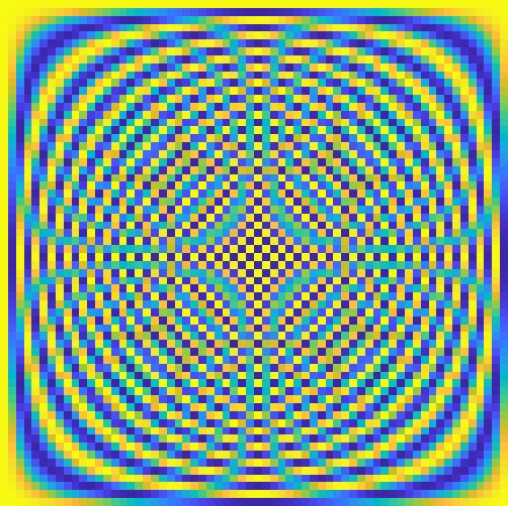

Building Blocks for Signals and Systems¶
This resource is an ongoing, collaborative effort to organize educational materials on common building blocks for signals and systems.
Each page covers a particular signal or system at four levels:
Theory
Analysis
Simulation
Embedded Implementation
Guide to contributing¶
The contents consist of a set of markdown files maintained this repository. Contributors should edit these markdown files.
Building¶
The website is automatically generated using Sphinx. Whenever the website is built using the build.sh script, the contents of the /docs and signal_toolbox folder are updated. Committing the docs folder will automatically published the website to Github pages. The signal_toolbox folder is automatically zipped into an archive containing a standalone version of the webpage.
Brief Introduction to markdown¶
Equations¶
Equations can be embedded inline \(e^{jx} = \cos(x) + j\sin(x)\) or centered
Tables¶
left aligned |
centered |
right aligned |
|---|---|---|
row 1 |
row 1 |
row 1 |
row 2 |
row 2 |
row 1 |
Code¶
Code can be displayed inline float32_t x = 0; or as a block
X = fft(eye(64));
figure; imagesc(real(X));
Images¶
